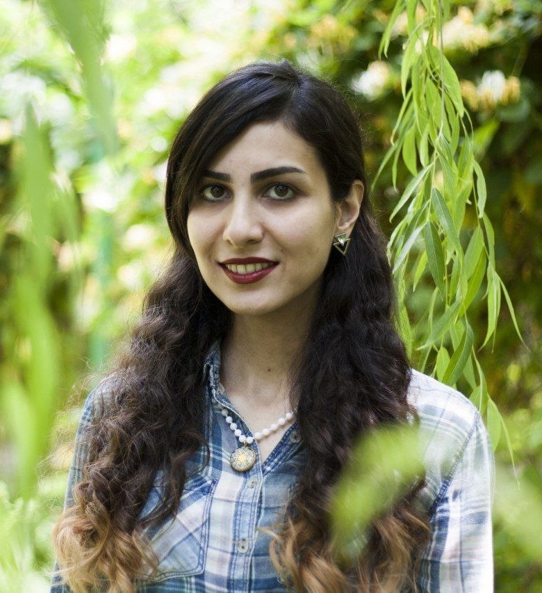

Elshan Sarkarfarshi (since 2025)
Elshan Sarkarfarshi is a doctoral researcher at the Luxembourg Centre for Logistics and Supply Chain Management (LCL). Her research lies at the intersection of robust control and optimization, focusing on developing methods to enhance stability and performance in uncertain environments. Under the supervision of Prof. Çağıl Koçyiğit, she investigates distributionally robust control strategies and their real-world applications. Her work aims to bridge theoretical advancements with practical implementations in robotics and autonomous systems. Elshan obtained her master’s degree in Electrical-Control Engineering from the University of Tabriz.